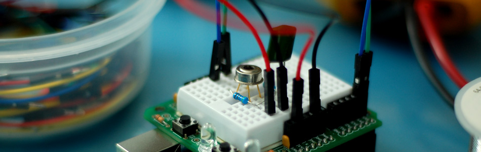

Is it hot? Arduino + MLX90614 IR Thermometer

I have had my eye on this guy ever since I saw it at Sparkfun, but never had a reason to get one. Then, looking around, the MLX90614 seemed to be giving some people a hard time when trying to connect it to their Arduino. So... we at bildr did what we do best, we bought one, and took some time to make your lives easier and get this running. This is an I2C device like many sensors we have talked about before, but unlike all the I2C sensors we have written about before this, the MLX90614 can't use the wire library to communicate with it, so we will be using another library, also, unlike what we typically deal with, the MLX90614 is not on a breakout board, so it requires some pull-up resistors on both the data and clock lines (Typically, these are included on the board, we just don't notice them.)
The standard wire library wasn't working for people, so we will be using the i2cmaster library instead. To complicate things even more, the i2cmaster wont run on the Arduino out of the box, some files need to be renamed and changed, and an extra txt file is needed to get it working. But... because it is open-sourced I can make those changes, and redistribute it. So that's what I'm going to do, I'm just giving it to you here in its working version to save you some time and headache. You will need to drop the library into your Arduino library folder for it to work, but we will get there.
As for hooking this up, on your Arduino (everything but the mega) SDA is on analog input pin 4, and SCL is on analog pin 5. On an Arduino mega, SDA is digital 20, and SCL is digital 21. Look at the picture to see how it should be connected, but a 4.7KΩ resistor needs to be connected from SDA to 3.3V, and another one from SCL to 3.3V. I also have a .1uf capacitor between power and ground as stated in the data sheet, but I have seen others not use it, and I have tested it without and it still worked.

Code
So, here is the code. Because it consists of many files, I am using bildr's fancy bildrCode wrapper. This allows us to have wiki like control over many files for a single project - just like this. All this code does is output the temperature in both Celsius and Fahrenheit via serial. So open your serial monitor!
To make this code work, before you load the code, or even open the Arduino program, we need to place the "I2Cmaster" in your Arduino Library. If you don't know where that is by default, Look to the right.
Once the I2CMaster folder is in there, you can just go ahead and open MLX90614.pde in your Arduino software, and upload it.
Default Library Folder Location
On your Mac:: In (home directory)/Documents/Arduino/libraries
On your PC:: My Documents -> Arduino -> libraries
On your Linux box:: (home directory)/sketchbook/libraries
Download
If you click the download button to the right of "Arduino" you can download the whole thing as a zip, so you dont need to copy all the files.
Conclusion
This is just such a cool sensor, and hopefully we saved you some time with is one. Let us know if you do anything with this guy, we would love to see it, and possible feature it on this very blog!
Article taken from bildr.org with minor changes - I am the original author of this content